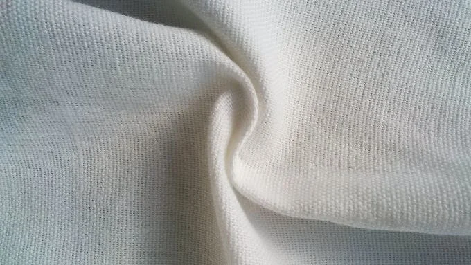
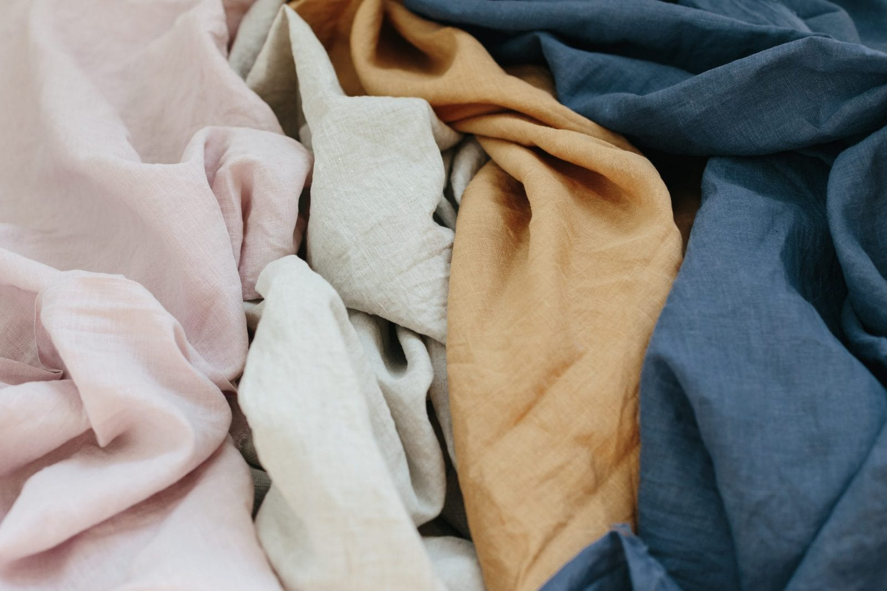
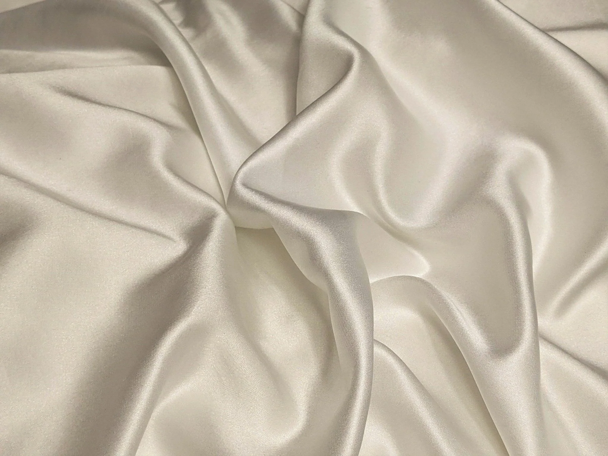

Know Your Fabrics
Why Fabric Matters
The fabric your clothing is made from affects its quality, comfort, and environmental impact. Learning about common materials can help you make more informed shopping decisions.

Organic Cotton
Organic cotton is a soft, breathable natural fiber commonly used in everyday clothing. It is grown using farming practices that reduce the use of many synthetic pesticides and fertilizers.

Linen
Linen is made from the flax plant and is known for its durability and breathability. It becomes softer over time, making it a timeless choice for warm-weather clothing.

Silk
Silk is a lightweight natural fiber valued for its softness and durability. When cared for properly, high-quality silk garments can last for many years.
Shopping Tips
- Read the fiber content label before purchasing.
- Choose pieces you will wear often.
- Care for your clothing properly to help it last longer.
Continue Learning
These resources offer more information about sustainable fabrics and conscious shopping.